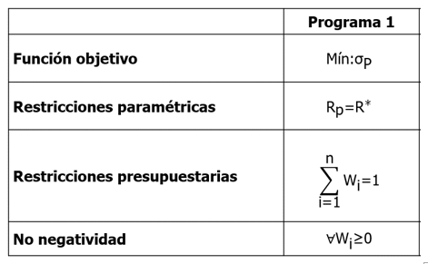
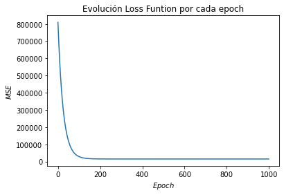
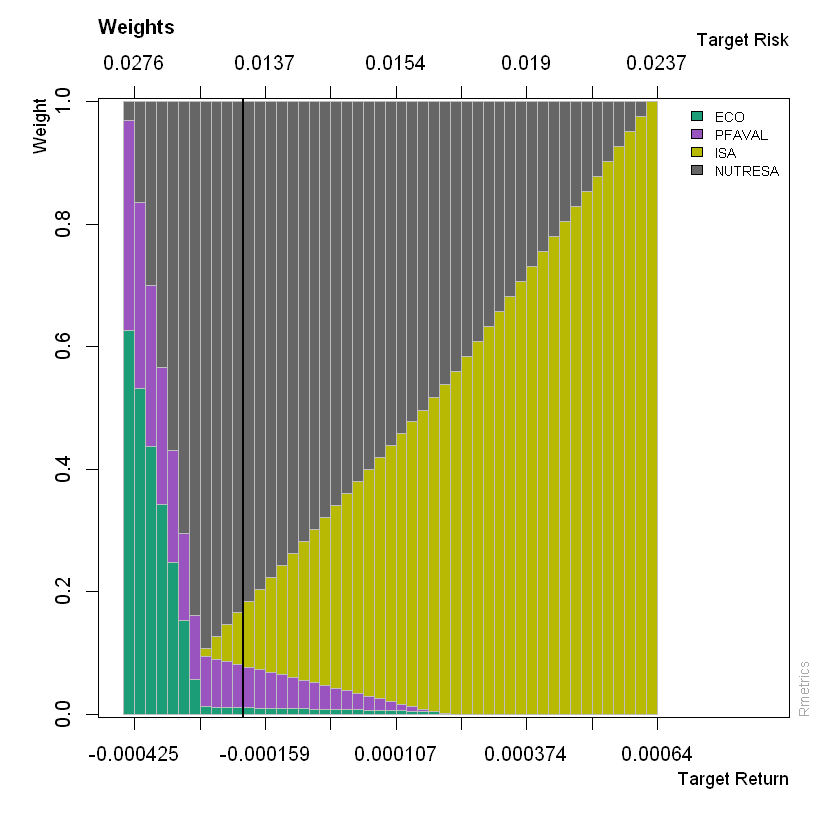

Frontera eficiente¶
Importar datos¶
datos = read.csv("Cuatro acciones 2020.csv", sep=";", dec=",", header = T)
head(datos)
tail(datos)
| Fecha | ECO | PFAVAL | ISA | NUTRESA | |
|---|---|---|---|---|---|
| <fct> | <int> | <int> | <int> | <int> | |
| 1 | 26/03/2018 | 2775 | 1165 | 13080 | 25720 |
| 2 | 27/03/2018 | 2645 | 1155 | 13080 | 25700 |
| 3 | 28/03/2018 | 2615 | 1165 | 13320 | 25980 |
| 4 | 2/04/2018 | 2690 | 1165 | 13420 | 25920 |
| 5 | 3/04/2018 | 2730 | 1175 | 13660 | 25920 |
| 6 | 4/04/2018 | 2740 | 1190 | 13560 | 25840 |
| Fecha | ECO | PFAVAL | ISA | NUTRESA | |
|---|---|---|---|---|---|
| <fct> | <int> | <int> | <int> | <int> | |
| 495 | 3/04/2020 | 2270 | 906 | 15500 | 19700 |
| 496 | 6/04/2020 | 2260 | 955 | 16140 | 19720 |
| 497 | 7/04/2020 | 2230 | 932 | 16680 | 20020 |
| 498 | 8/04/2020 | 2360 | 936 | 17200 | 20700 |
| 499 | 13/04/2020 | 2250 | 951 | 17860 | 21300 |
| 500 | 14/04/2020 | 2220 | 955 | 18000 | 22500 |
Matriz de precios¶
precios = datos[,-1]
precios = ts(precios)
Matriz de rendimientos¶
rendimientos = diff(log(precios))
Frontera eficiente de Markowitz¶
Se utilizará la librería fPortfolio, primero se debe instalar de
esta manera: install.packages("fPortfolio"). Luego, se llama la
librería con library(fPortfolio).
library(fPortfolio)
Se usa portfolioFrontier para calcular los portafolios de la
frontera que contiene portafolios eficientes y no eficientes.
Se debe convertir la matriz de rendimientos de las acciones como serie
de tiempo de esta manera: as.timeSeries(rendimientos).
Se tiene la restricción que solo se permiten posiciones en largo en el
portafolio de inversión, implica que no se permiten operaciones de venta
en corto. Esto se hace con constraints = "longOnly".
frontera = portfolioFrontier(as.timeSeries(rendimientos), constraints = "longOnly")
portfolioFrontier tiene varias formas de calcular la frontera
eficiente, a partir de la relación media-varianza que es de la teoría de
Harry Markowitz o de algunas variaciones como utilizar el VaR y CVaR en
lugar de la varianza. Para saber si se está aplicando la teoría de
Markowitz se utiliza getType(portfolioSpec()), si el resultado es
MV, es el modelo de media-varianza.
Por defecto, portfolioFrontier está configurado con MV.
getType(portfolioSpec())
Por defecto, portfolioFrontier está configurado para minimizar el
riesgo, dado un rendimiento objetivo, como se muestra en la siguiente
figura.
Se comprueba con getOptimize(portfolioSpec()).
getOptimize(portfolioSpec())

1¶
Gráfico de la frontera eficiente¶
Para graficar la frontera se utiliza frontierPlot. Muestra la
frontera eficiente, desde el portafolio de mínima varianza o volatilidad
y la frontera no eficiente ubicada por debajo del portafolio de mínima
varianza.
frontierPlot(frontera)

cex para el tamaño de cada punto.
monteCarloPoints muestra posibles porfafolios de inversión, en este
ejemplo se muestran 500 portafolio, mcSteps = 500. Son 500
portafolios aleatorios.
pch = 19es para puntos sólidos.
minvariancePoints muestra el portafolio de mínima varianza.
equalWeightsPoints muestra el portafolio con proporciones de
inversión iguales en cada uno de los activos.
frontierPlot(frontera, cex = 2, pch = 19)
monteCarloPoints(frontera, col = "blue", mcSteps = 500, cex = 0.5, pch = 19)
minvariancePoints(frontera, col = "darkred", pch = 19, cex = 2)
equalWeightsPoints(frontera, col = "darkgreen", pch = 19, cex = 2)
{kind=link}

Gráficos de proporciones de los portafolios de la frontera¶
El gráfico de pesos de la frontera se interpreta con cada una de las barras verticales. El eje inferior muestra el rendimiento del portafolio y el eje superior la volatilidad. El eje vertical indica las proporciones de inversión.
En la primera barra, el rendimiento del portafolio es de -0,000425 y la volatilidad de 0,0276, para obtener este portafolio los pesos se tienen que distribuir de la siguiente forma: 63% aproximadamente en ECO, 34% en PFAVAL, 0% en ISA y 3% en NUTRESA.
La línea vertical negra representa el portafolio de mínima varianza.
weightsPlot(frontera)

Con paleta de colores:
colores = qualiPalette(ncol(rendimientos), "Dark2") # Paleta de colores
weightsPlot(frontera, col = colores)
{kind=link}

Proporciones de inversión de la frontera¶
Los resultados de las proporciones \((W_i)\) de los portafolios de
la frontera se pueden ver con getWeights.
proporciones_frontera = getWeights(frontera)
print(proporciones_frontera)
ECO PFAVAL ISA NUTRESA
[1,] 0.627055608 0.342516126 0.00000000 0.03042827
[2,] 0.532194109 0.302671538 0.00000000 0.16513435
[3,] 0.437332609 0.262826950 0.00000000 0.29984044
[4,] 0.342471109 0.222982362 0.00000000 0.43454653
[5,] 0.247609609 0.183137774 0.00000000 0.56925262
[6,] 0.152748109 0.143293186 0.00000000 0.70395871
[7,] 0.057886609 0.103448598 0.00000000 0.83866479
[8,] 0.012448495 0.082369546 0.01244463 0.89273733
[9,] 0.012089095 0.078406404 0.03623993 0.87326458
[10,] 0.011729696 0.074443262 0.06003522 0.85379182
[11,] 0.011370296 0.070480121 0.08383051 0.83431907
[12,] 0.011010897 0.066516979 0.10762581 0.81484632
[13,] 0.010651497 0.062553837 0.13142110 0.79537357
[14,] 0.010292098 0.058590696 0.15521639 0.77590082
[15,] 0.009932698 0.054627554 0.17901168 0.75642806
[16,] 0.009573299 0.050664412 0.20280698 0.73695531
[17,] 0.009213899 0.046701271 0.22660227 0.71748256
[18,] 0.008854500 0.042738129 0.25039756 0.69800981
[19,] 0.008495100 0.038774987 0.27419286 0.67853706
[20,] 0.008135701 0.034811846 0.29798815 0.65906430
[21,] 0.007776302 0.030848704 0.32178344 0.63959155
[22,] 0.007416902 0.026885562 0.34557874 0.62011880
[23,] 0.007057503 0.022922421 0.36937403 0.60064605
[24,] 0.006698103 0.018959279 0.39316932 0.58117330
[25,] 0.006338704 0.014996137 0.41696462 0.56170054
[26,] 0.005979304 0.011032996 0.44075991 0.54222779
[27,] 0.005619905 0.007069854 0.46455520 0.52275504
[28,] 0.005260505 0.003106712 0.48835049 0.50328229
[29,] 0.004411873 0.000000000 0.51217215 0.48341597
[30,] 0.001788542 0.000000000 0.53608946 0.46212200
[31,] 0.000000000 0.000000000 0.56017148 0.43982852
[32,] 0.000000000 0.000000000 0.58460640 0.41539360
[33,] 0.000000000 0.000000000 0.60904131 0.39095869
[34,] 0.000000000 0.000000000 0.63347623 0.36652377
[35,] 0.000000000 0.000000000 0.65791115 0.34208885
[36,] 0.000000000 0.000000000 0.68234607 0.31765393
[37,] 0.000000000 0.000000000 0.70678099 0.29321901
[38,] 0.000000000 0.000000000 0.73121590 0.26878410
[39,] 0.000000000 0.000000000 0.75565082 0.24434918
[40,] 0.000000000 0.000000000 0.78008574 0.21991426
[41,] 0.000000000 0.000000000 0.80452066 0.19547934
[42,] 0.000000000 0.000000000 0.82895558 0.17104442
[43,] 0.000000000 0.000000000 0.85339049 0.14660951
[44,] 0.000000000 0.000000000 0.87782541 0.12217459
[45,] 0.000000000 0.000000000 0.90226033 0.09773967
[46,] 0.000000000 0.000000000 0.92669525 0.07330475
[47,] 0.000000000 0.000000000 0.95113016 0.04886984
[48,] 0.000000000 0.000000000 0.97556508 0.02443492
[49,] 0.000000000 0.000000000 0.99999999 0.00000000
Media-varianza de la frontera¶
Los resultados de las volatilidades y rendimientos de los portafolios de
inversión de la frontera se pueden ver con frontierPoints.
media_varianza_frontera = frontierPoints(frontera)
print(media_varianza_frontera)
targetRisk targetReturn
1 0.02757505 -4.249971e-04
2 0.02448843 -4.028126e-04
3 0.02157674 -3.806282e-04
4 0.01892091 -3.584438e-04
5 0.01664388 -3.362594e-04
6 0.01492009 -3.140750e-04
7 0.01395607 -2.918906e-04
8 0.01378202 -2.697062e-04
9 0.01373305 -2.475218e-04
10 0.01370275 -2.253374e-04
11 0.01369124 -2.031530e-04
12 0.01369858 -1.809686e-04
13 0.01372472 -1.587842e-04
14 0.01376957 -1.365998e-04
15 0.01383294 -1.144153e-04
16 0.01391457 -9.223094e-05
17 0.01401416 -7.004653e-05
18 0.01413131 -4.786212e-05
19 0.01426560 -2.567771e-05
20 0.01441655 -3.493303e-06
21 0.01458364 1.869111e-05
22 0.01476633 4.087551e-05
23 0.01496403 6.305992e-05
24 0.01517617 8.524433e-05
25 0.01540214 1.074287e-04
26 0.01564136 1.296131e-04
27 0.01589321 1.517976e-04
28 0.01615712 1.739820e-04
29 0.01643250 1.961664e-04
30 0.01671909 2.183508e-04
31 0.01701648 2.405352e-04
32 0.01732437 2.627196e-04
33 0.01764230 2.849040e-04
34 0.01796974 3.070884e-04
35 0.01830617 3.292728e-04
36 0.01865112 3.514572e-04
37 0.01900411 3.736416e-04
38 0.01936471 3.958260e-04
39 0.01973250 4.180105e-04
40 0.02010709 4.401949e-04
41 0.02048810 4.623793e-04
42 0.02087518 4.845637e-04
43 0.02126800 5.067481e-04
44 0.02166625 5.289325e-04
45 0.02206963 5.511169e-04
46 0.02247787 5.733013e-04
47 0.02289070 5.954857e-04
48 0.02330789 6.176701e-04
49 0.02372920 6.398545e-04
attr(,"control")
targetRisk targetReturn auto
"Cov" "mean" "TRUE"
Portafolio de mínima varianza¶
El portafolio de mínima varianza o volatilidad se puede ver con
minvariancePortfolio.
minima_varianza = minvariancePortfolio(as.timeSeries(rendimientos), constraints = "LongOnly")
minima_varianza
Title:
MV Minimum Variance Portfolio
Estimator: covEstimator
Solver: solveRquadprog
Optimize: minRisk
Constraints: LongOnly
Portfolio Weights:
ECO PFAVAL ISA NUTRESA
0.0113 0.0700 0.0865 0.8322
Covariance Risk Budgets:
ECO PFAVAL ISA NUTRESA
0.0113 0.0700 0.0865 0.8322
Target Returns and Risks:
mean Cov CVaR VaR
-0.0002 0.0137 0.0336 0.0168
Description:
Sun May 31 20:27:19 2020 by user: migue